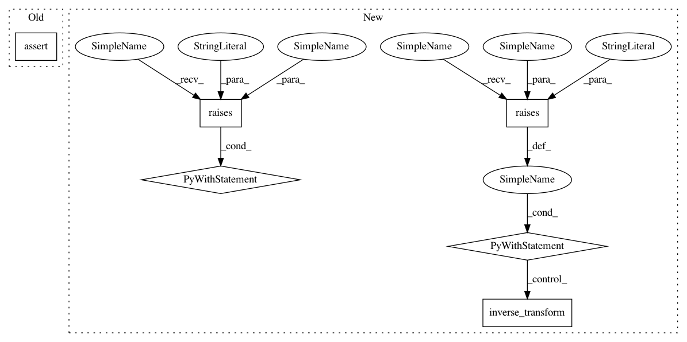

fcc22e65a2d7f07e95d470f1c3d41f269b0e6fb2,nilearn/connectome/tests/test_connectivity_matrices.py,,test_connectivity_measure_outputs,#,426
Before Change
sym_matrix_to_vec(connectivities))
// Check not fitted error
assert_raises_regex(
ValueError, "has not been fitted. ",
ConnectivityMeasure().inverse_transform,
vectorized_connectivities)
// Check inverse transformation
kinds.remove("tangent")
for kind in kinds:
After Change
inverse_transformed = conn_measure.inverse_transform(
vectorized_connectivities, diagonal=diagonal)
assert_array_almost_equal(inverse_transformed, connectivities)
with pytest.raises(ValueError,
match="can not reconstruct connectivity matrices"):
conn_measure.inverse_transform(vectorized_connectivities)
// for "tangent" kind, covariance matrices are reconstructed
// without vectorization
tangent_measure = ConnectivityMeasure(kind="tangent")
displacements = tangent_measure.fit_transform(signals)
covariances = ConnectivityMeasure(kind="covariance").fit_transform(
signals)
assert_array_almost_equal(
tangent_measure.inverse_transform(displacements), covariances)
// with vectorization
// when diagonal has not been discarded
tangent_measure = ConnectivityMeasure(kind="tangent", vectorize=True)
vectorized_displacements = tangent_measure.fit_transform(signals)
assert_array_almost_equal(
tangent_measure.inverse_transform(vectorized_displacements),
covariances)
// when diagonal has been discarded
tangent_measure = ConnectivityMeasure(kind="tangent", vectorize=True,
discard_diagonal=True)
vectorized_displacements = tangent_measure.fit_transform(signals)
diagonal = np.array([np.diagonal(matrix) / sqrt(2) for matrix in
displacements])
inverse_transformed = tangent_measure.inverse_transform(
vectorized_displacements, diagonal=diagonal)
assert_array_almost_equal(inverse_transformed, covariances)
with pytest.raises(ValueError,
match="can not reconstruct connectivity matrices"):
tangent_measure.inverse_transform(vectorized_displacements)
In pattern: SUPERPATTERN
Frequency: 3
Non-data size: 6
Instances
Project Name: nilearn/nilearn
Commit Name: fcc22e65a2d7f07e95d470f1c3d41f269b0e6fb2
Time: 2019-12-20
Author: kc.insight.pi@gmail.com
File Name: nilearn/connectome/tests/test_connectivity_matrices.py
Class Name:
Method Name: test_connectivity_measure_outputs
Project Name: nilearn/nilearn
Commit Name: fcc22e65a2d7f07e95d470f1c3d41f269b0e6fb2
Time: 2019-12-20
Author: kc.insight.pi@gmail.com
File Name: nilearn/connectome/tests/test_connectivity_matrices.py
Class Name:
Method Name: test_connectivity_measure_outputs
Project Name: nilearn/nilearn
Commit Name: fcc22e65a2d7f07e95d470f1c3d41f269b0e6fb2
Time: 2019-12-20
Author: kc.insight.pi@gmail.com
File Name: nilearn/input_data/tests/test_nifti_labels_masker.py
Class Name:
Method Name: test_nifti_labels_masker
Project Name: nilearn/nilearn
Commit Name: fcc22e65a2d7f07e95d470f1c3d41f269b0e6fb2
Time: 2019-12-20
Author: kc.insight.pi@gmail.com
File Name: nilearn/input_data/tests/test_nifti_maps_masker.py
Class Name:
Method Name: test_nifti_maps_masker